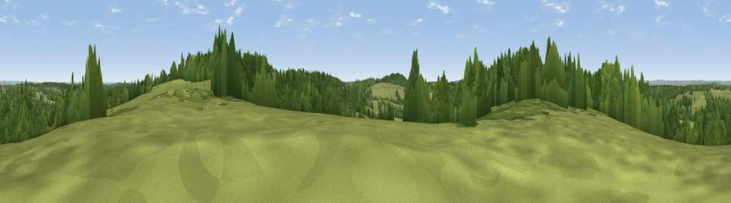

Viewpoint near Frant
#38716 in England · top 41% of its area beats it · near Frant · path 89 mWhere it is
The exact computed spot (TQ 58575 35775). Click the marker for map links.
Public access: the nearest public right of way is about 89 m away — the final stretch may cross private land. Computed from Natural England's CRoW access layer and OpenStreetMap rights of way — not the legal definitive map. Always verify locally.
The view, rendered

A 360° render of this exact spot computed from the terrain model, tree cover and land cover — summer colours, afternoon light, calibrated against photographs of famous viewpoints. Real trees, hedges and buildings will differ in detail.
The panorama
Grey silhouette: terrain skyline in each direction (720 bearings, Earth curvature and refraction included). Dashed green: skyline with trees (+15 m) and buildings (+8 m) as obstacles. Blue strip: how far the ground is visible on each bearing.
Where the view opens
Wedge length = distance to the farthest visible ground on that bearing (vegetation-aware). Rings at 10, 25 and 50 km.
What fills the view
54% woodland · 41% grassland · 3% built-up · 2% cropland
Angular shares of the visible panorama (visual magnitude), not map area. Landscape diversity 0.38 (0–1 Shannon).
Key numbers
More beautiful places nearby
The staircase of upgrades: each row has a higher view potential than everything closer. Driving times are estimates from straight-line distance, calibrated against real road routing — check an actual route before setting out.
| Place | Direction | Drive | Score |
|---|---|---|---|
| Viewpoint near Frant | SSE · 1 km | ~3 min | 42.0 |
| Viewpoint near Town Row | SW · 4 km | ~9 min | 48.4 |
| Viewpoint near Argos Hill | SSW · 8 km | ~16 min | 53.0 |
| Viewpoint near Upper Hartfield | WSW · 12 km | ~23 min | 59.6 |
| Brightling Obelisk [Brightling Down] | SSE · 17 km | ~29 min | 69.1 |
| Viewpoint near Glynde | SSW · 29 km | ~46 min | 70.8 |
| Malling Hill | SW · 29 km | ~46 min | 73.8 |
| Cliffe Hill | SSW · 29 km | ~46 min | 79.3 |
51.09935, 0.26340 · source: screening · position refined by local search. Computed location — check access rights before visiting.